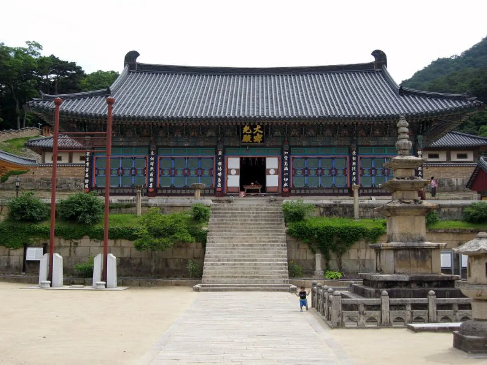
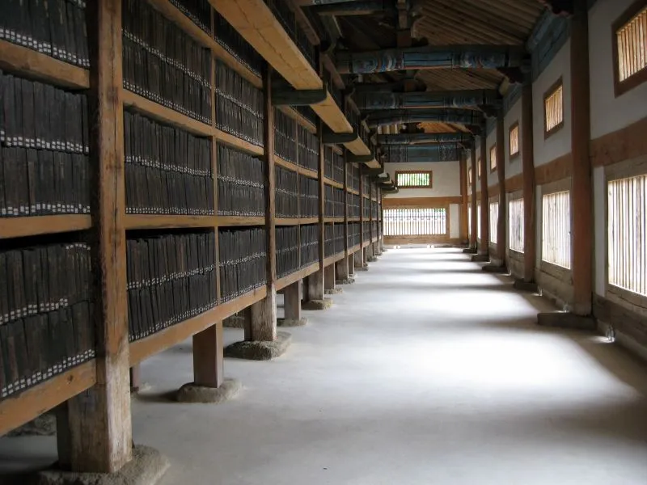
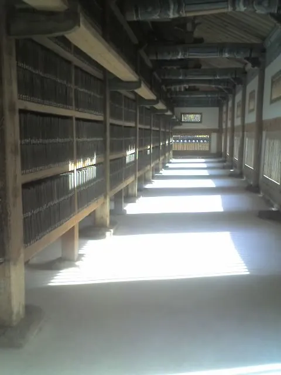
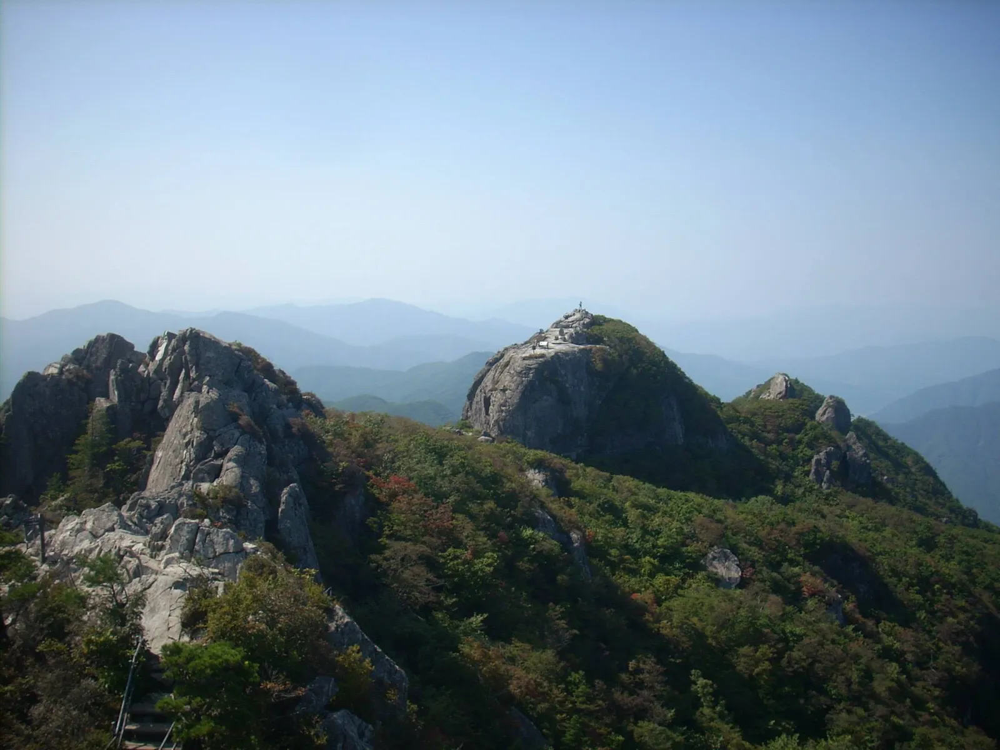
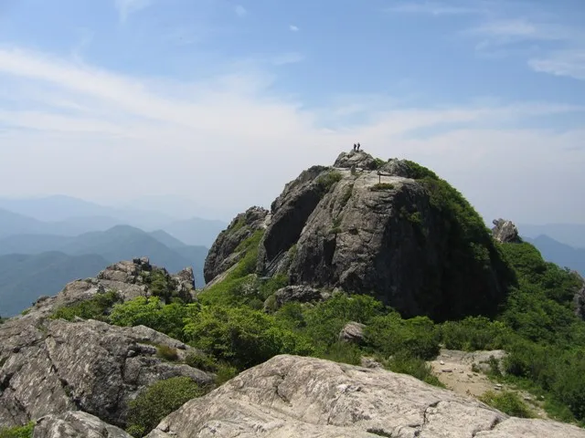
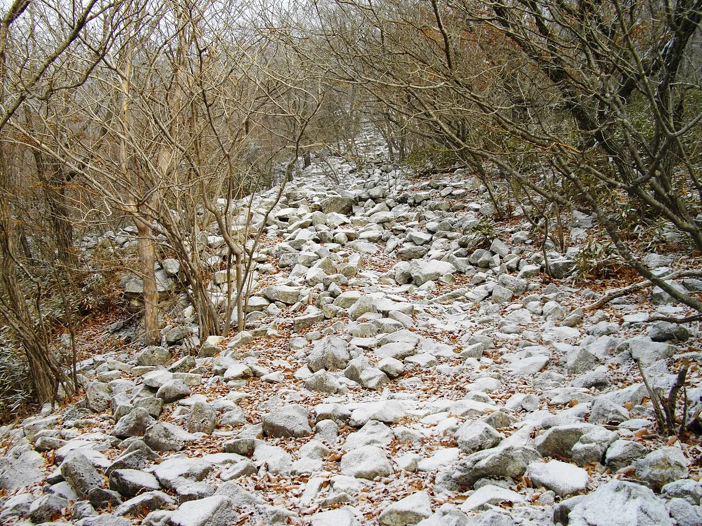
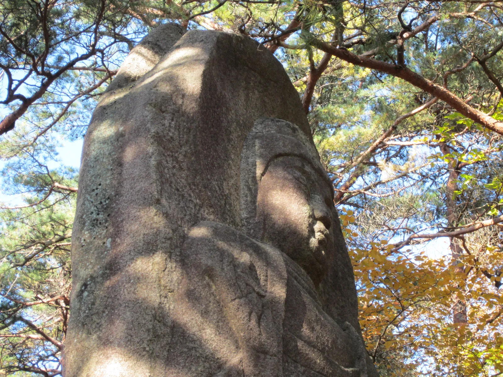

▲ 가야산이 단풍으로 물든 계절의 해인사 대적광전. 마당의 삼층석탑 너머로 산자락이 붉게 물들었다
경남 합천군 가야면, 해발 1430m 가야산 자락에 해인사(海印寺)가 자리 잡은 것은 신라 애장왕 3년(802년)이다. 이 절이 특별한 이유는 단 하나, 고려 시대에 새긴 목판 8만 1258장, 팔만대장경을 700년 넘게 원형 그대로 보관해 온 장경판전(藏經板殿) 때문이다. 국보로 지정된 이 목조 건물은 별다른 냉난방 장치 없이도 목판이 뒤틀리거나 썩지 않도록 설계된 통풍 구조로 현대 과학자들도 감탄하는 대상이다. 여기에 홍류동 계곡을 따라 걷는 소리길, 가야산 등산코스, 가을이면 절정을 이루는 단풍까지 더해지면 하루 일정으로는 다소 빠듯하다. 이 기사는 팔만대장경 관람 포인트부터 소리길, 단풍 시기, 입장료·주차까지 방문 순서대로 정리했다.
1. 해인사는 어떤 곳인가 — 법보사찰과 팔만대장경

▲ 해인사의 중심 전각 대적광전. 마당의 오층석탑과 석등이 함께 보인다 ⓒ Wikimedia Commons
해인사는 양산 통도사(불보), 순천 송광사(승보)와 함께 삼보사찰(三寶寺刹) 중 하나로, 부처의 가르침인 '법(法)'을 상징하는 법보사찰이다. 그 상징이 바로 팔만대장경이다. 고려가 몽골의 침입을 받던 13세기, 부처의 힘으로 국난을 극복하고자 16년에 걸쳐 새긴 목판 경전으로, 현재까지 남아있는 대장경 목판 중 가장 오래되고 내용이 완벽해 그 가치를 인정받는다. 대장경판 자체와 이를 보관해 온 장경판전 모두 국보로 지정돼 있으며, 장경판전은 1995년 유네스코 세계문화유산으로, 대장경판은 2007년 유네스코 세계기록유산으로 각각 등재됐다. 문화유산 지정이 이중으로 겹치는 셈이라 방문객 입장에서는 '건물도 국보, 그 안의 목판도 국보'라는 점을 알고 보면 감상이 다르다.

▲ 장경판전 내부에 보관된 팔만대장경판. 통풍이 잘 되도록 설계된 서가에 목판이 세로로 꽂혀 있다 ⓒ Wikimedia Commons

▲ 대장경판 클로즈업. 목판 하나하나에 불경 내용이 새겨져 있다 ⓒ Wikimedia Commons
다만 장경판전 내부는 목판 보존을 위해 일반 관람객의 출입이 제한된다. 건물 외부에서 창살 틈으로 목판 서가를 들여다보는 정도가 가능하며, 매년 정기적으로 열리는 특별 관람 행사나 성보박물관의 전시를 통해 대장경판 실물을 더 가까이 볼 수 있다. 경내에는 이밖에도 대적광전, 그 앞의 오층석탑과 석등, 산 곳곳에 흩어진 암자들이 있어 반나절 정도는 여유 있게 잡는 편이 좋다.
2. 홍류동 계곡 소리길 — 최치원이 걸었던 옛길
해인사 초입, 홍류동(紅流洞) 계곡을 따라 걷는 가야산 소리길은 대장경테마파크에서 해인사 영산교까지 옛길을 복원해 만든 저지대 산책로다. 전체 길이는 자료에 따라 7~9km 사이로 소개되는데, 계곡의 물소리·새소리·솔바람 소리를 듣는다는 의미에서 '소리길'이라는 이름이 붙었다. 오르막이 거의 없는 평탄한 길이라 등산이 부담스러운 방문객도 걷기 좋고, 다리와 데크, 황토포장길이 번갈아 이어진다.

▲ 가야산 능선. 홍류동 계곡을 따라 걷다 보면 이런 산세가 병풍처럼 펼쳐진다 ⓒ Wikimedia Commons
소리길에는 신라 말 학자 최치원(崔致遠)의 전설이 짙게 배어 있다. 벼슬을 버리고 가야산에 은거한 최치원이 계곡 물소리가 너무 커 세상 시비하는 소리가 들리지 않도록 귀를 씻었다는 이야기, 갓과 신발만 남긴 채 신선이 되어 사라졌다는 이야기가 전해진다. 그가 머물렀다는 농산정(籠山亭)이 계곡 중간에 남아 있어 소리길의 대표 쉼터로 꼽힌다. 이밖에 칠성대, 낙화담 등도 코스에 포함된 명소다. 다만 장애인 화장실이나 전용 주차구역, 휠체어 대여 등 무장애 편의시설은 갖춰져 있지 않은 점은 참고할 필요가 있다.
합천군 문화관광 소리길 안내 페이지에서 확인 가능3. 가야산 등산코스 — 상왕봉까지 왕복 5~6시간

▲ 가야산 정상 상왕봉. 우두봉이라고도 불리며 해발 1430m다 ⓒ Wikimedia Commons
가야산은 해인사 방면에서 오르는 코스가 가장 널리 알려져 있다. 해인사 매표소에서 출발해 정상인 상왕봉(우두봉, 1430m)까지 오르는 코스는 왕복 약 5~6시간 정도가 소요되는 것으로 알려져 있으며, 중간에 마애불입상 등 문화유산을 함께 볼 수 있다. 성주군 방면 백운동 코스, 칠불봉을 경유하는 코스 등 대안 경로도 있어 체력과 일정에 맞춰 선택할 수 있다. 국립공원 구간인 만큼 지정된 탐방로를 벗어나지 않는 것이 원칙이며, 방문 전 국립공원공단 가야산사무소를 통해 최신 통제 구간이나 코스별 소요시간을 확인하는 편이 안전하다.
| 코스 | 주요 경유지 | 난이도 |
|---|---|---|
| 가벼운 탐방 | 대장경테마파크→소리길(일부 구간)→해인사 | 하(평탄) |
| 소리길 전 구간 | 대장경테마파크→농산정→칠성대→영산교→해인사 | 중(오르막 거의 없음) |
| 등산 코스 | 해인사→마애불입상→상왕봉 정상 왕복 | 상(왕복 약 5~6시간) |

▲ 가야산 등산로 구간. 계절에 따라 돌길과 낙엽 구간이 이어진다(사진은 겨울철 촬영) ⓒ Wikimedia Commons
4. 단풍 시기 — 예년 기준 11월 초·중순 절정
가야산 단풍은 예년 기준으로 11월 초에서 중순 사이 절정을 이루는 것으로 알려져 있다. 다만 2026년 정확한 절정 시기는 이 글 작성 시점(9월) 기준으로 산림청·기상청의 공식 단풍 예보가 아직 발표되지 않았다. 매년 9월 말~10월 초 발표되는 산림청 단풍 예측지도를 통해 그 해의 정확한 절정 시기를 확인하는 것이 가장 정확하다. 붉게 물든 홍류동 계곡('홍류'라는 이름 자체가 단풍이 계곡물을 붉게 물들인다는 뜻에서 유래했다는 설이 있을 만큼 이 계절과 인연이 깊다)과 대적광전 뒤로 물든 가야산 자락이 어우러지는 모습이 이 시기의 대표 풍경이다.
✅ 단풍철 방문 시 참고할 점
· 예년 기준 절정 시기: 11월 초~중순 전후(해마다 변동)
· 2026년 정확한 시기는 9월 말~10월 초 산림청 공식 발표 확인 필요
· 주말·연휴 기간에는 소리길·해인사 주차장 혼잡 가능성 높음
5. 입장료·주차·운영시간
2023년 5월 4일부터 개정 문화재보호법이 시행되면서 해인사를 포함한 전국 65개 사찰의 문화재관람료가 전면 폐지됐다. 정부 예산으로 그 비용을 대체하는 방식이어서 방문객은 별도의 입장료 없이 해인사 경내를 둘러볼 수 있다. 다만 국립공원 지정 주차장은 유료로 운영되는 경우가 많으므로 주차요금은 현장에서 별도 확인이 필요하다.
| 항목 | 내용 |
|---|---|
| 문화재관람료 | 무료(2023.5.4부터 전국 사찰 공통 폐지) |
| 주차 | 유료(가야산국립공원 지정 주차장, 요금은 현장 확인) |
| 해인사 위치 | 경남 합천군 가야면 해인사길 122 |
| 개방시간 | 연중무휴(계절별 세부 시간은 현장·홈페이지 확인 권장) |
6. 경내 더 보기 — 마애불과 성보박물관

▲ 해인사 인근 산기슭 바위에 새겨진 마애불상. 소나무 숲 사이로 은은하게 모습을 드러낸다 ⓒ Wikimedia Commons
해인사 경내와 등산로 초입 곳곳에는 이런 마애불(磨崖佛)이 남아 있어, 대장경과 대적광전만 보고 지나치기 아까운 볼거리를 더한다. 시간 여유가 있다면 해인사 성보박물관에 들러 대장경판 인쇄본이나 관련 유물 전시를 함께 살펴보는 것도 좋다. 등산까지 계획한다면 상왕봉 코스 중간에 있는 마애불입상도 놓치지 말아야 할 포인트다.
✅ 합천 해인사·가야산, 가기 전 체크리스트
· 해인사는 802년 창건된 법보사찰, 팔만대장경(국보·세계기록유산)과 장경판전(국보·세계문화유산) 보유
· 홍류동 계곡 소리길은 약 7~9km, 최치원 전설이 깃든 농산정 경유
· 가야산 정상 상왕봉(1430m)까지 등산 시 왕복 약 5~6시간
· 문화재관람료는 2023년 5월부터 전국 65개 사찰과 함께 폐지, 입장료 무료
· 국립공원 주차장은 유료, 요금은 현장 확인 필요
· 단풍은 예년 기준 11월 초·중순 절정, 2026년 정확한 시기는 산림청 발표 확인
· 시간 여유가 있다면 성보박물관과 마애불까지 함께 둘러보기 좋다